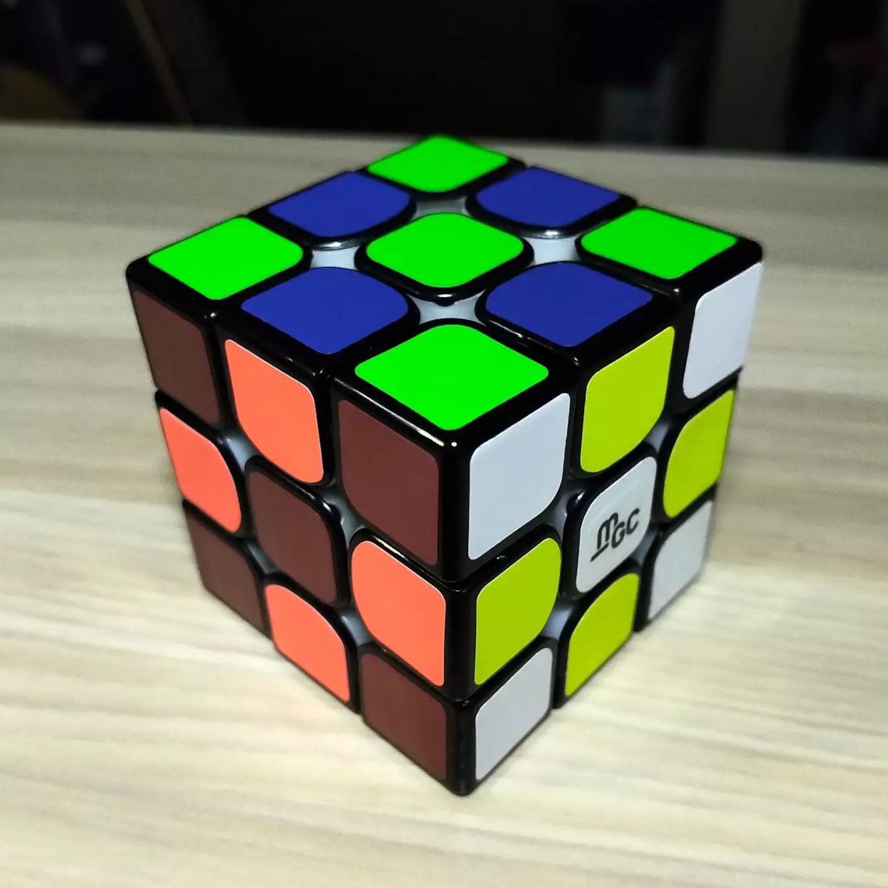
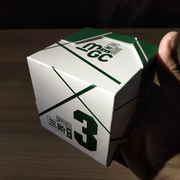
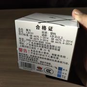
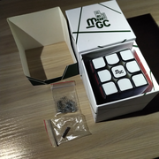
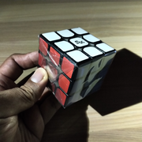
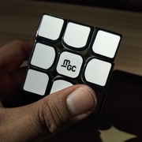
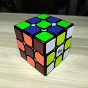
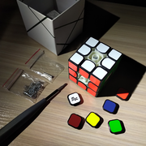
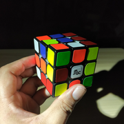

YJ MGC
{kind=link}

YJ8101 (2018)
YJ MGC 3 × 3 Cube. Stickered cube with primary internals and light magnets. The second phase of my cube collection may focus on different cube feelings, and this one doesn't disappoint. When I turn this cube, it sounds like shuffling a deck of cards, and the feel is very interesting, very bumpy or tactile, but without taking away any smoothness in turning. This was also very loose out of the box; I tightened each of the screws a full turn, which made it feel more together. But it never lost its flexibility. It's very "loosey-goosey" or wobbly when held, like the Meffert's Hollow Cube, owing to the very light magnets, but not in a bad way; it doesn't lead to the pieces catching for me. (You can see it in the 4th picture that it doesn't enforce exactly lined-up layers when held up.) It also came with extra springs and magnets, but maybe I've been spoiled by modern cube tensioning systems that I did not feel like trying to install them right that moment. Overall a very interesting feeling on a cube, and I wonder if this mechanism was imported into any other cubes. If the other cubing content creators are to be believed, no it was not. Too bad; I'd love a stickerless version of this. On a separate note, this is my first post-typhoon cube unboxing; lighting provided by my flashlight!
Original post: https://www.instagram.com/p/CtLlT_XuTLA
Specifications
| Make | YJ |
|---|---|
| Model | MGC |
| Edition/Variant | |
| Model no. | YJ8101 |
| Release year | 2018 |
| 🧲 (edge-corner) | ✅ |
|---|---|
| 🧲 (Core) | ❎ |
| 🧲 (Maglev) | ❎ |
| Stickerless | ❎ |
| Internals | Primary |
|---|---|
| Externals | Black caps, colored stickers |
| Adjustment | Philips screw - axis distance |
| Remarks | (none) |
Photos
{kind=link}

Cube box
{kind=link}

Box bottom (with model number)
{kind=link}

Box contents
{kind=link}

Cube in plastic wrap
{kind=link}

White face and MGC logo
{kind=link}

Cube (checkerboard state)
{kind=link}

Center caps removed and screw adjustment
{kind=link}

Cube (scrambled state)
Collections
This cube is part of the following collections: